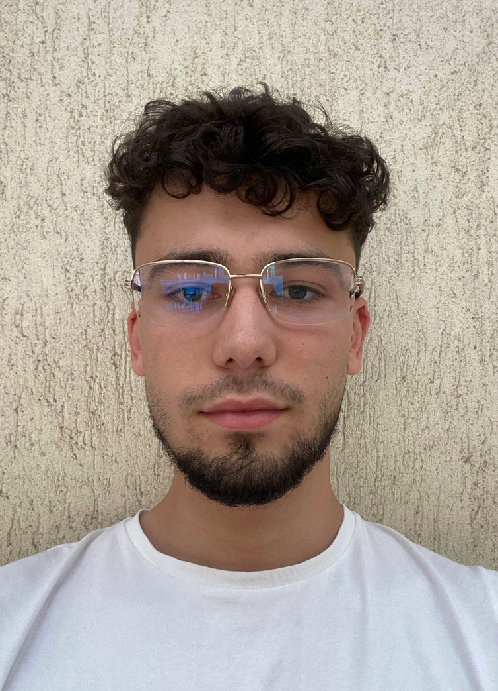

As a Computer Science student at Vrije Universiteit Amsterdam, I am passionate about
exploring the intersections of technology, engineering, business, and education.
My goal is to leverage my skills and knowledge to make a positive impact in these
domains.
I thrive in collaborative environments, having gained valuable experience
working within teams and engaging with customers. I'm always eager to embrace new
ideas and innovation while continuously seeking opportunities for personal and professional
growth. My ultimate aim is to contribute to the fields of technology and education, nurturing
improvement and progress.